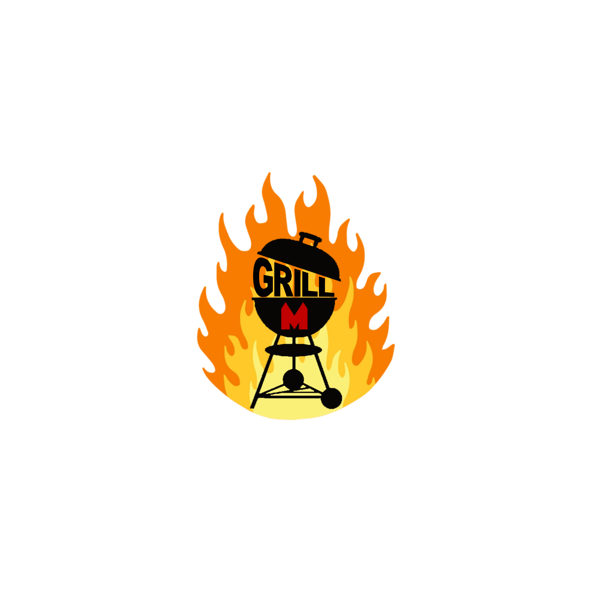
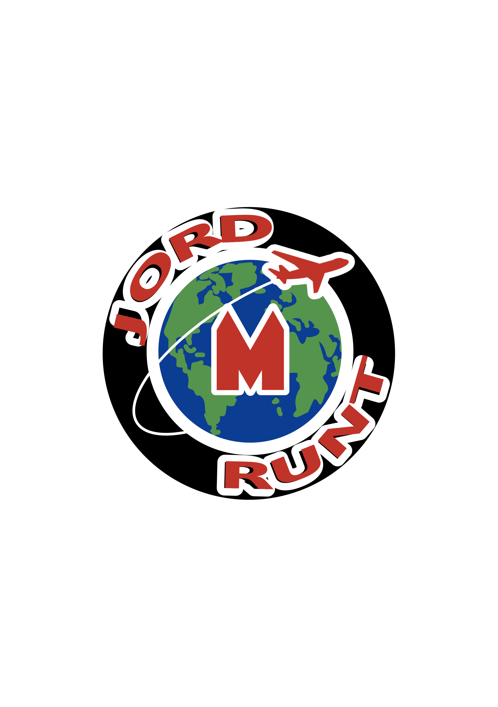
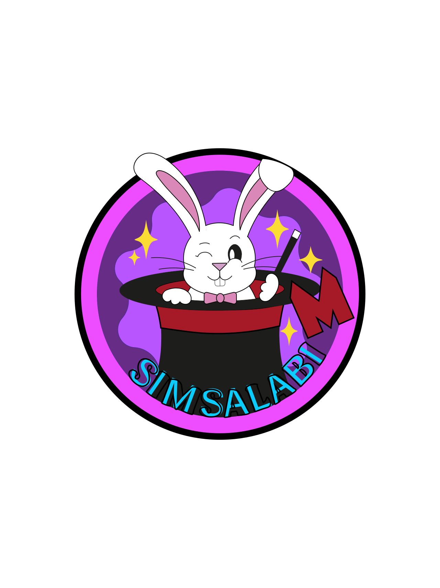
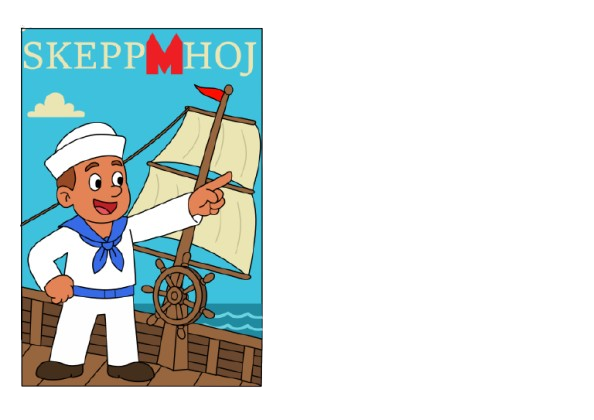
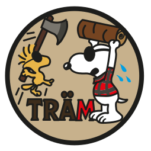
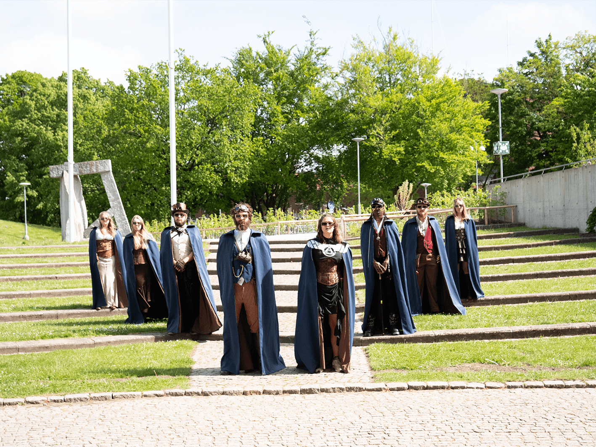

Nollningen
Phøset

Phøset är sju mytomspunna skepnader som träder fram när behovet för Nollningen är som störst. Inget vet riktigt vilka de är eller var de kommer ifrån, men en sak är säker, deras närvaro signalerar att Nollningen äntligen är kommen
Phøret
.jpg)
Hej på er!
Det är vi som är Phøret! Oss kommer ni se och höra under hela nollningen och ni känner igen oss i våra frackar.
Vi är ett gäng härliga maskinare som finns här för att se till att alla nya maskinteknikstudenter känner sig hemma i Lund och på LTH.
Vi är med och hjälper till på event, arrangerar event och bidrar med allmänt tagg.
Phøret kan ses som Phaddrar utan en egen phaddergrupp, vi finns här för alla!
Har du frågor angående Nollningen? Hittar du inte till föreläsningssalen? Eller vill du bara hänga med ett gäng sköna maskinare?
Då är det bara att komma fram till oss i Phøret!
Styret

Hej, det är vi som är styrelsen! Vårt arbete är att stötta och vägleda alla funktionärer på Maskinsektionen i Lund. Vi tar större beslut om verksamheten och jobbar för att nå långsiktiga och kortsiktiga mål. Vi hoppas verkligen att du kommer trivas på vår underbara sektion! Har du några som helst frågor, funderingar, klagomål etc. kan du alltid komma fram och prata med oss eller kontakta oss på styrelsen@maskinsektionen.com, vi ses under nollningen!
Hufvudphaddrarna
Hej allihopa!
Här är vi som kommer vara era hufvudphaddrar denna nollning! Var och en av oss har hand om en phaddergrupp bestående av taggade phaddrar och såklart ett antal nollor också! Tillsammans med Phøset, Phøret, phaddrarna och ett flertal andra ser vi till att du som nolla får bästa möjliga start på din tid i Lund och på Maskinsektionen. Vi ser verkligen fram emot att träffa er alla!
Phaddrarna
- Dina guider till studentlivet
Som nyantagen student i Lund kommer det i början vara många intryck och saker kommer inte alltid att kännas helt självklara. Som tur är finns vi Phaddrar här för att hjälpa och visa vägen under din första tid i Lund. Med oss kan du prata och ställa frågor om allt som rör studentlivet i Lund, vare sig det är vilken nation som har bäst dansgolv eller hur man löser en matteuppgift.
Phadder-Grupperna:
.png)



.png)




Nollningsutskottet på Teknologkåren

Tjenixten blixten! Vi är Nollningsutskottet på Teknologkåren; Nolleamiral, Nollegeneral och flera Øverstar. Men vad är egentligen nollU? Jo! Vi är vanliga LTH studenter som under våren och sommaren jobbat för att välkomna er med några fantastiska evenemang där ni och eran sektion tävlar i olika uppdrag mot de andra sektionerna i allt från lådbilsrace till vattenkrig. Lika viktigt, om inte viktigare, finns möjligheten att lära känna fler studenter, nu även på andra sektioner. Att säga att vi är supertaggade på att få träffa er är en underdrift och vi kan inte bärga oss att se allt underbart och fantastiskt ni kommer åstadkomma. Hoppas vi ses där! För att inte missa resultaten på uppdragen, följ vår instagram @tlthnollnin
Nollegeneral
Hejsan Nollan,
och varmt välkommen till Nollningen 2025.
Mitt namn är Erica Fritz och jag har det ärofyllda uppdraget att vara årets Nollegeneral. Det innebär att jag under våren tillsammans med Nolleamiralen, Øverstarna och alla andra ansvariga på Teknologkårens sektioner har jobbat för att göra din första tid här på LTH så fantastisk som möjligt.
Nollningen bjuder på ett brett utbud av aktiviteter och för oss som anordnar den är det extra viktigt att du som Nolla vet att tanken inte är att du ska vara med på allt, tanken är snarare att där ska finnas något för alla. Ni ska ju ha tid för era studier också!
Vi här på Teknologkåren är otroligt stolta över att vår kår är en plats där man kan känna sig trygg, utvecklas och ha en bra studietid oavsett vem man är. Det innebär att du, som nybliven medlem, har ett ansvar för att se till att denna goda stämning upprätthålls. Visa respekt och omtanke för dina medstudenter och du kommer få tillbaka det tusenfallt.
Om du har något du vill lyfta kring nollningen, undrar något eller bara är sugen på lite gött häng är det bara att komma fram och hugga tag i mig, Nolleamiralen eller någon av våra Øverstar. Du känner igen oss på våra mörkblåa mantlar, många kugghjul och den allmänna steampunk-viben.
Återigen, välkommen till Lund, LTH och Teknologkåren och vi ses snart!
Tips från phøset
Øverphos Ato

"När du börjar plugga så är det mycket som händer samtidigt! En att göra-lista och en kalender gör att du både kan ha koll på plugget och hinna med allt roligt under nollningen."
Phøs Caelum

"Varannan vatten är ingen dum ide, speciellt under varma och långa dagar! Nollningen är ett maraton, inte en sprint. "
Phøs Cirrus

"Att känna sig ensam i början av universitetet är vanligare än man tror. Alla är nya, alla letar efter sin plats – även om det inte alltid syns utåt. Du är inte ensam i att känna så. Ge det tid, var snäll mot dig själv, och våga ta små steg. Ditt sammanhang kommer – det lovar jag."
Phøs Torreo

"Vila. Det är lätt att vilja göra allt - men sömn och vila är det som gör att du orkar plugga, ha kul och vara social. Det är okej att ta en kväll hemma. Det kommer fler fester och fler evenemang - glöm inte bort att ta hand om dig själv också!"
Phøs Astraea

"Nollningen är en otroligt kul och intensiv period och det kan vara lätt att glömma bort skolan. Tentorna är närmre än vad man tror så ta vara på studiekvällarna och försök att gå på föreläsningarna, så kan man vara med på allt roligt utan ångest för plugget."
Phøs Zephyros

"När den gamla cykeln ger upp vänder du dig till din nya hemförsäkring."
Phøs Celestia

Vi ses i augusti!
Vi i phøset och alla andra engagerade i nollningen ser verkligen fram emot att träffa dig och visa upp allt roligt såväl Maskinsektionen som studentstaden Lund har att erbjuda! Ifall du har några frågor kring nollningen eller något annat relaterat till din studietid - tveka inte att maila till nollning@maskinsektionen.com!
Maskinsektionen inom TLTH
M SEK Nollning
M SEK INFO
M SEK COMMUNITY
M SEK CAREER
M SEK KÖP OCH SÄLJ
M SEK IDROTT
Maskinsektionen inom TLTH
Phøret